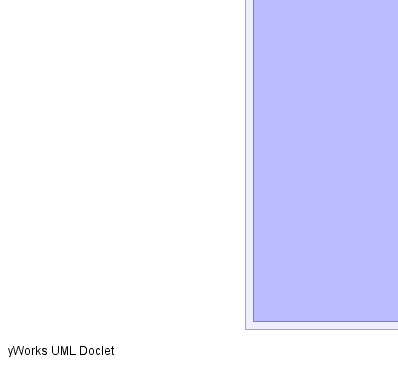
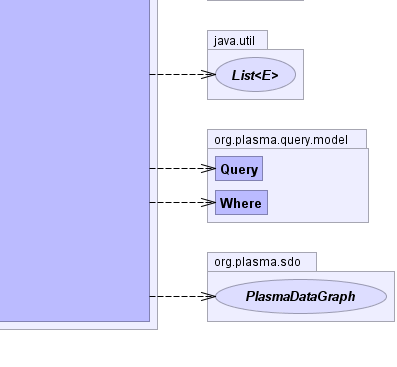

- java.lang.Object
-
- org.cloudgraph.hbase.service.GraphQuery
-
- All Implemented Interfaces:
- org.plasma.sdo.access.QueryDispatcher
public class GraphQuery extends java.lang.Object implements org.plasma.sdo.access.QueryDispatcherAssembles and returns one or moredata graphsfrom HBase given a PlasmaQuery™ based XPath or DSL query. First an HBase row filter is assembled usingPredicateRowFilterAssemblerwhich uses query literal values and logic found in the 'where' clause or predicate(s).Any "slice" of a graph or set of sub-graphs can be selected using the PlasmaQuery™ API by specifying paths through the graph. Paths may include any number of predicates along the path. Based on this selection criteria an
GraphFetchColumnFilterAssembleris used to precisely restrict the HBase columns returned for each result row.Then for each resulting HBase row, a data graph
assembleris used to reconstruct and return the original graph structure from the resulting HBase row.The PlasmaQuery™ API provides a flexible mechanism to fully describe any arbitrary SDO results Data Graph, independent of any persistence framework or type of data store. PlasmaQuery™ supports XPath expressions as a free-text "surface language", parsed by the API implementation and used to construct an underlying query object model representation. As an alternative to free-text, PlasmaQuery™ contains a query Domain Specific Language (DSL) generator and API facilitating (IDE) code-completion, 100% compile-time checking and resulting in code with an almost "fluent" English appearance based on your business model.
- Since:
- 0.5
- Author:
- Scott Cinnamond
- See Also:
Query,PredicateRowFilterAssembler,SimpleGraphAssembler,GraphFetchColumnFilterAssembler-


 
-
-
Constructor Summary
Constructors Constructor and Description GraphQuery(ServiceContext context)
-
Method Summary
Methods Modifier and Type Method and Description voidclose()intcount(org.plasma.query.model.Query query)Returns a count of the given query.org.plasma.sdo.PlasmaDataGraph[]find(org.plasma.query.model.Query query, int requestMax, java.sql.Timestamp snapshotDate)org.plasma.sdo.PlasmaDataGraph[]find(org.plasma.query.model.Query query, java.sql.Timestamp snapshotDate)java.util.ListgetVariables(org.plasma.query.model.Where where)protected voidlog(org.plasma.query.model.Query query)protected java.lang.StringserializeGraph(commonj.sdo.DataGraph graph)
-
-
-
Constructor Detail
-
GraphQuery
public GraphQuery(ServiceContext context)
-
-
Method Detail
-
close
public void close()
- Specified by:
closein interfaceorg.plasma.sdo.access.QueryDispatcher
-
find
public org.plasma.sdo.PlasmaDataGraph[] find(org.plasma.query.model.Query query, java.sql.Timestamp snapshotDate)- Specified by:
findin interfaceorg.plasma.sdo.access.QueryDispatcher
-
find
public org.plasma.sdo.PlasmaDataGraph[] find(org.plasma.query.model.Query query, int requestMax, java.sql.Timestamp snapshotDate)- Specified by:
findin interfaceorg.plasma.sdo.access.QueryDispatcher
-
count
public int count(org.plasma.query.model.Query query)
Returns a count of the given query.- Specified by:
countin interfaceorg.plasma.sdo.access.QueryDispatcher- Parameters:
query- the query- Returns:
- the query results size
-
getVariables
public java.util.List getVariables(org.plasma.query.model.Where where)
-
log
protected void log(org.plasma.query.model.Query query)
-
serializeGraph
protected java.lang.String serializeGraph(commonj.sdo.DataGraph graph) throws java.io.IOException- Throws:
java.io.IOException
-
-